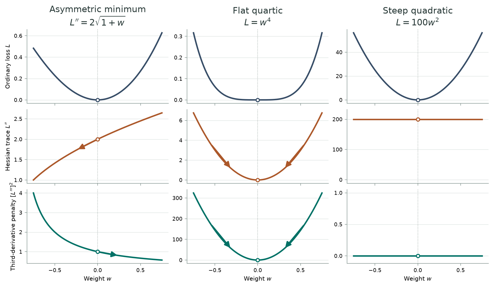
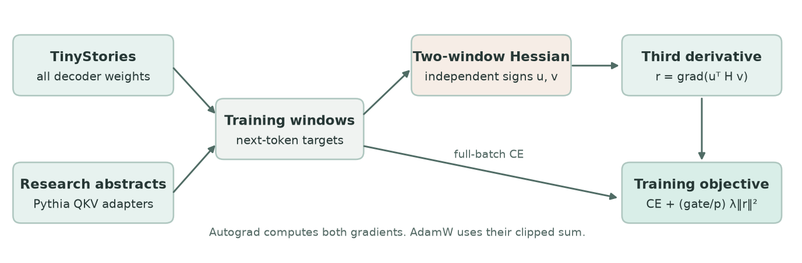

Third derivatives in
language-model training
Does penalizing changes in loss curvature improve next-token predictions? Compare ordinary training, Hessian-trace regularization, and a third-derivative penalty at equal training tokens.
Read the preregistrationCompleted runs—
Training tokens logged—
Recorded training time—
Loading the study ledger…
Training curves
One trajectory per run
Development curves use fixed probe windows. Completed-run tables show full development scores. The raw run logs retain every observation.
Run ledger
| Run | Method | Seed | Ratio | Tokens | Dev NLL | Test NLL | Tokens/s | Peak MiB | Status |
|---|
Paired evidence
The registered comparison uses held-out loss at equal training tokens. A negative difference favors the third-order objective. Both baseline comparisons must pass the corrected sign tests.
Output examples
Fixed development prompts
Prompt
Model continuation
Method
Read the paper ↗Hochreiter and Schmidhuber proposed that among equally good training fits, flatter minima may generalize better. If weights can be rounded more coarsely and still fit, a good predictor can take fewer bits to describe. Here the test of generalization is how well the model predicts unseen tokens. Flat Minima (1997) ↗
The Hessian describes local loss curvature. On active updates, two independent random sign vectors estimate how quickly that curvature changes for the next-token loss of two text windows. The derivatives cover all TinyStories decoder weights or only Pythia’s trainable attention adapters, including interactions between trainable weights.
When moving away from a flat bottom makes curvature change faster, the third-derivative penalty can pull the weights back. A steep bowl with constant curvature receives zero penalty from this term. Whether the optimizer finds wider minima is a separate question from the measured next-token loss.

Circles mark the ordinary loss minima. Arrows show downhill directions for each penalty. The vertical scales vary by panel. Worked examples and the basin-width bound ↗
